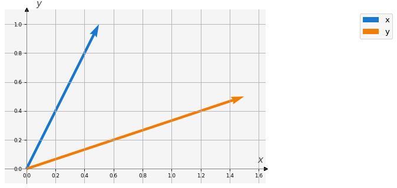
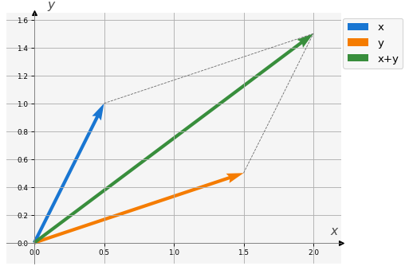
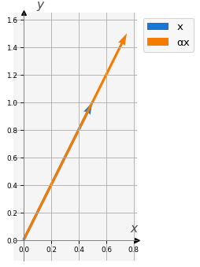

# Importamos las bibliotecas requeridas
import numpy as np
import macti.visual as mvis1 Espacio vectorial \(\mathbb{R}^2\).
Objetivo. Revisar e ilustrar las propiedades del espacio vectorial \(\mathbb{R}^2\) usando la biblioteca numpy.
MACTI-Algebra_Lineal_01 by Luis M. de la Cruz is licensed under Attribution-ShareAlike 4.0 International


Trabajo realizado con el apoyo del Programa UNAM-DGAPA-PAPIME PE101922
1.1 Vectores en \(\mathbb{R}^2\).
Usando la biblioteca numpy podemos definir vectores en varias dimensiones. Para ejemplificar definiremos vectores en \(\mathbb{R}^2\) y haremos algunas operaciones en este espacio vectorial.
# Definimos dos vectores en R^2 (arreglos 1D de numpy de longitud 2).
x = np.array([0.5, 1.0])
y = np.array([1.5, 0.5])
print('x = {}'.format(x))
print('y = {}'.format(y))x = [0.5 1. ]
y = [1.5 0.5]La biblioteca macti.visual permite graficar los vectores en \(\mathbb{R}^2\) como sigue:
v = mvis.Plotter() # Definición de un objeto para crear figuras.
v.set_coordsys(1) # Definición del sistema de coordenadas.
v.plot_vectors(1, [x, y], ['x', 'y']) # Graficación de los vectores 'x' y 'y'.
v.grid() # Muestra la rejilla del sistema de coordenadas.
1.2 Propiedades de un espacio vectorial.
- \(\vec{x} + \vec{y} \in \mathbb{R}^n\).
- \(\vec{x} + \vec{y} = \vec{y} + \vec{x}\).
- \(\vec{x} + (\vec{y} + \vec{z})= (\vec{x} + \vec{y}) + \vec{z}\).
- Existe el vector neutro \(\vec{0} \in \mathbb{R}^n\) tal que \(\vec{x} + \vec{0} = \vec{x}\).
- Para cada \(\vec{x}\in \mathbb{R}^n\) existe el opuesto \(-\vec{x}\) tal que \(\vec{x} + (-\vec{x}) = \vec{0}\).
- \(\alpha \vec{x} \in \mathbb{R}^n\).
- \(\alpha (\vec{x} + \vec{y}) = \alpha \vec{x} + \alpha \vec{y}\).
- \((\alpha + \beta) \vec{x} = \alpha \vec{x} + \beta \vec{x}\).
- \(\alpha (\beta \vec{x}) = (\alpha \beta) \vec{x}\).
- Existe el elemento neutro \(\mathbf{1} \in \mathbb{R}\) tal que \(\mathbf{1} \vec{x} = \vec{x}\).
1.2.1 Propiedad 1: la suma es una operación interna.
\(\vec{x} + \vec{y} \in \mathbb{R}^n\).
# Suma de dos vectores
z = x + y
print('x = {}'.format(x))
print('y = {}'.format(y))
print('z = x + y = {}'.format(z))
# Graficamos los vectores y su suma
v = mvis.Plotter()
v.set_coordsys()
v.plot_vectors_sum(1, [x, y], ['x', 'y'], ofx=-0.3) # Grafica los vectores y el resultado de la suma.
v.grid()x = [0.5 1. ]
y = [1.5 0.5]
z = x + y = [2. 1.5]
Observa que la función plot_vectors_sum() muestra los vectores originales y la suma de ellos. El nuevo vector \(\vec{z}\) está en \(\mathbb{R}^2\).
1.2.2 Propiedad 2: la suma es conmutativa.
\(\vec{x} + \vec{y} = \vec{y} + \vec{x}\).
xpy = x + y
ypx = y + x
print(' x + y = {} \t y + x = {}'.format(xpy, ypx))
print('\n ¿ x + y == y + x ? : {}'.format(np.isclose(xpy, ypx))) x + y = [2. 1.5] y + x = [2. 1.5]
¿ x + y == y + x ? : [ True True]Observa que la operación suma + se realiza componente a componente.
La función np.isclose() compara cada componente de los arreglos y determina que tan “parecidas” son hasta una tolerancia absoluta de \(10^{-8}\). Esta forma de comparación es la más conveniente cuando se comparan números reales (punto flotante, floating point).
1.2.3 Propiedad 3: la suma es asociativa.
\(\vec{x} + (\vec{y} + \vec{z})= (\vec{x} + \vec{y}) + \vec{z}\).
print(' x = {} \t y = {} \t z = {}'.format(x, y, z))
print(' x + (y + z)= {} \t (x + y) + z = {}'.format(x + (y + z), (x + y) + z))
print('\n ¿ x + (y + z) == (x + y) + z : {}'.format(np.isclose(x + (y + z), (x + y) + z))) x = [0.5 1. ] y = [1.5 0.5] z = [2. 1.5]
x + (y + z)= [4. 3.] (x + y) + z = [4. 3.]
¿ x + (y + z) == (x + y) + z : [ True True]1.2.4 Propiedad 4: elemento neutro de la suma.
Existe el vector neutro \(\vec{0} \in \mathbb{R}^n\) tal que \(\vec{x} + \vec{0} = \vec{x}\).
# Definimos el vector neutro.
cero = np.zeros(2)
print(' x = {} \t cero = {}'.format(x, cero))
print(' x + cero = {}'.format(x + cero)) x = [0.5 1. ] cero = [0. 0.]
x + cero = [0.5 1. ]1.2.5 Propiedad 5: elemento inverso en la suma.
Para cada \(\vec{x}\in \mathbb{R}^n\) existe el inverso \(-\vec{x}\) tal que \(\vec{x} + (-\vec{x}) = \vec{0}\).
print(' x = {} \t -x = {}'.format(x, -x))
print(' x + (-x) = {}'.format(x + (-x))) x = [0.5 1. ] -x = [-0.5 -1. ]
x + (-x) = [0. 0.]1.2.6 Propiedad 6: la multiplicación de un vector por un escalar produce un vector.
\(\alpha \vec{x} \in \mathbb{R}^n\).
# Definimos un escalar
α = 1.5
# Realizamos la multiplicación de x por el escalar
αx = α * x
# Mostramos el resultado
print(' α = {} \t x = {} \n α * x = {} \n '.format(α, x, αx))
# Graficamos el vector original y el resultado.
v = mvis.Plotter()
v.set_coordsys()
v.plot_vectors(1, [x, αx], ['x', 'αx'], w=0.020)
v.grid() α = 1.5 x = [0.5 1. ]
α * x = [0.75 1.5 ]

Observa que el vector original \(\vec{x} = (0.5, 1.0)\), representado por la flecha azul, es más pequeño que el vector resultante \(\alpha \vec{x} = (0.75, 1.5)\), representado por la flecha naranja. \(\alpha\) multiplica a cada componente del vector \(\vec{x}\).
Cuando multiplicamos un vector por un escalar, puede ocurrir que su longitud se agrande, se reduzca y/o que cambie de sentido.
Intenta modificar el valor de \(\alpha\) a \(0.5\) y luego a \(-0.5\), observa que sucede.
1.2.7 Propiedad 7: distributividad I.
\(\alpha (\vec{x} + \vec{y}) = \alpha \vec{x} + \alpha \vec{y}\)
print(' α = {}'.format(α))
print(' x = {} \t y = {}'.format(x, y))
print(' α * (x + y) = {}'.format(α * (x + y)))
print(' α * x + α * y = {}'.format(α * x + α * y))
print(' ¿ α * (x + y) == α * x + α * y ? : {}'.format(np.isclose(α * (x + y), α * x + α * y))) α = 1.5
x = [0.5 1. ] y = [1.5 0.5]
α * (x + y) = [3. 2.25]
α * x + α * y = [3. 2.25]
¿ α * (x + y) == α * x + α * y ? : [ True True]1.2.8 Propiedad 8: distributividad II.
\((\alpha + \beta) \vec{x} = \alpha \vec{x} + \beta \vec{x}\)
# Definimos dos escalares
α = 2.0
β = 1.5
print(' α = {} \t β = {} \t α + β = {}'.format(α, β, α + β))
print(' x = {}'.format(x))
print(' (α + β) * x = {}'.format((α + β) * x))
print(' α * x + β * x = {}'.format(α * x + β * x))
print(' ¿ (α + β) * x == α * x + β * x ? : {}'.format(np.isclose((α + β) * x, α * x + β * x))) α = 2.0 β = 1.5 α + β = 3.5
x = [0.5 1. ]
(α + β) * x = [1.75 3.5 ]
α * x + β * x = [1.75 3.5 ]
¿ (α + β) * x == α * x + β * x ? : [ True True]1.2.9 Propiedad 9. asociatividad.
\(\alpha (\beta \vec{x}) = (\alpha \beta) \vec{x}\).
# Definimos dos escalares
α = 2.0
β = 1.5
print(' α = {} \t β = {} \t x = {}'.format(α, β, x))
print(' α * (β * x) = {}'.format(α * ( β * x)))
print(' (α * β) * x = {}'.format((α * β) * x))
print(' ¿ α * (β * x) == (α * β) * x ? : {}'.format(np.isclose(α * (β * x), (α * β) * x))) α = 2.0 β = 1.5 x = [0.5 1. ]
α * (β * x) = [1.5 3. ]
(α * β) * x = [1.5 3. ]
¿ α * (β * x) == (α * β) * x ? : [ True True]1.2.10 Propiedad 10.
Existe el elemento neutro \(\mathbf{1} \in \mathbb{R}\) tal que \(\mathbf{1} \vec{x} = \vec{x}\).
α = 1.0
print(' α = {} \t x = {}'.format(α, x))
print(' α * x = {}'.format(α * x))
print(' ¿ α * x == x ? : {}'.format(np.isclose(α * x, x))) α = 1.0 x = [0.5 1. ]
α * x = [0.5 1. ]
¿ α * x == x ? : [ True True]1.3 Ejercicio 1.
Definimos los siguientes vectores \(\vec{x} = (1.2, 3.4, 5.2, -6.7)\) y \(\vec{y} = (4.4, -2.3, 5.3, 8.9)\) ambos en \(\mathbb{R}^4\).
Usando \(\alpha = 0.5\) y \(\beta = 3.5\), verifica que se cumplen las propiedades 1 a 10 para \(\vec{x}\) y \(\vec{y}\).
Hint. Define los vectores \(\vec{x}\) y \(\vec{y}\) usando numpy y posteriormente copia los códigos utilizados en el ejemplo de \(\mathbb{R}^2\) para cada propiedad. En algunos casos debes ajustar el código para este ejercicio.
Obervación. En este caso no es posible realizar gráficas.
### Definición de los vectores en R^4 con numpy
x = np.array([1.2, 3.4, 5.2, -6.7])
y = np.array([4.4, -2.3, 5.3, 8.9])
print('x = {}'.format(x))
print('y = {}'.format(y))x = [ 1.2 3.4 5.2 -6.7]
y = [ 4.4 -2.3 5.3 8.9]Propiedad 1.
El resultado debería ser:
x = [ 1.2 3.4 5.2 -6.7]
y = [ 4.4 -2.3 5.3 8.9]
z = x + y = [ 5.6 1.1 10.5 2.2]### Propiedad 1.
### BEGIN SOLUTION
z = x + y
print('x = {}'.format(x))
print('y = {}'.format(y))
print('z = x + y = {}'.format(z))
### END SOLUTIONx = [ 1.2 3.4 5.2 -6.7]
y = [ 4.4 -2.3 5.3 8.9]
z = x + y = [ 5.6 1.1 10.5 2.2]Propiedad 2.
El resultado debería ser:
x + y = [ 5.6 1.1 10.5 2.2] y + x = [ 5.6 1.1 10.5 2.2]
¿ x + y == y + x ? : [ True True True True]### Propiedad 2.
### BEGIN SOLUTION
xpy = x + y
ypx = y + x
print(' x + y = {} \t y + x = {}'.format(xpy, ypx))
print('\n ¿ x + y == y + x ? : {}'.format(xpy == ypx))
### END SOLUTION x + y = [ 5.6 1.1 10.5 2.2] y + x = [ 5.6 1.1 10.5 2.2]
¿ x + y == y + x ? : [ True True True True]Propiedad 3.
El resultado debería ser:
x = [ 1.2 3.4 5.2 -6.7] y = [ 4.4 -2.3 5.3 8.9] z = [ 5.6 1.1 10.5 2.2]
x + (y + z)= [11.2 2.2 21. 4.4] (x + y) + z = [11.2 2.2 21. 4.4]
¿ x + (y + z) == (x + y) + z : [ True True True True]### Propiedad 3.
### BEGIN SOLUTION
print(' x = {} \t y = {} \t z = {}'.format(x, y, z))
print(' x + (y + z)= {} \t (x + y) + z = {}'.format(x + (y + z), (x + y) + z))
print('\n ¿ x + (y + z) == (x + y) + z : {}'.format(np.isclose(x + (y + z), (x + y) + z)))
### END SOLUTION x = [ 1.2 3.4 5.2 -6.7] y = [ 4.4 -2.3 5.3 8.9] z = [ 5.6 1.1 10.5 2.2]
x + (y + z)= [11.2 2.2 21. 4.4] (x + y) + z = [11.2 2.2 21. 4.4]
¿ x + (y + z) == (x + y) + z : [ True True True True]Propiedad 4.
El resultado debería ser:
x = [ 1.2 3.4 5.2 -6.7] cero = [0. 0. 0. 0.]
x + cero = [ 1.2 3.4 5.2 -6.7]### Propiedad 4.
### BEGIN SOLUTION
cero = np.zeros(4)
print(' x = {} \t cero = {}'.format(x, cero))
print(' x + cero = {}'.format(x + cero))
### END SOLUTION x = [ 1.2 3.4 5.2 -6.7] cero = [0. 0. 0. 0.]
x + cero = [ 1.2 3.4 5.2 -6.7]Propiedad 5.
El resultado debería ser:
x = [ 1.2 3.4 5.2 -6.7] -x = [-1.2 -3.4 -5.2 6.7]
x + (-x) = [0. 0. 0. 0.]### Propiedad 5.
### BEGIN SOLUTION
print(' x = {} \t -x = {}'.format(x, -x))
print(' x + (-x) = {}'.format(x + (-x)))
### END SOLUTION x = [ 1.2 3.4 5.2 -6.7] -x = [-1.2 -3.4 -5.2 6.7]
x + (-x) = [0. 0. 0. 0.]Propiedad 6.
El resultado debería ser:
α = 1.5 x = [ 1.2 3.4 5.2 -6.7]
α * x = [ 1.8 5.1 7.8 -10.05] ### Propiedad 6.
### BEGIN SOLUTION
α = 1.5
αx = α * x
print(' α = {} \t x = {} \n α * x = {} \n '.format(α, x, αx))
### END SOLUTION α = 1.5 x = [ 1.2 3.4 5.2 -6.7]
α * x = [ 1.8 5.1 7.8 -10.05]
Propiedad 7.
El resultado debería ser:
α = 1.5
x = [ 1.2 3.4 5.2 -6.7] y = [ 4.4 -2.3 5.3 8.9]
α * (x + y) = [ 8.4 1.65 15.75 3.3 ]
α * x + α * y = [ 8.4 1.65 15.75 3.3 ]
¿ α * (x + y) == α * x + α * y ? : [ True True True True]### Propiedad 7.
### BEGIN SOLUTION
print(' α = {}'.format(α))
print(' x = {} \t y = {}'.format(x, y))
print(' α * (x + y) = {}'.format(α * (x + y)))
print(' α * x + α * y = {}'.format(α * x + α * y))
print(' ¿ α * (x + y) == α * x + α * y ? : {}'.format(np.isclose(α * (x + y), α * x + α * y)))
### END SOLUTION α = 1.5
x = [ 1.2 3.4 5.2 -6.7] y = [ 4.4 -2.3 5.3 8.9]
α * (x + y) = [ 8.4 1.65 15.75 3.3 ]
α * x + α * y = [ 8.4 1.65 15.75 3.3 ]
¿ α * (x + y) == α * x + α * y ? : [ True True True True]Propiedad 8.
El resultado debería ser:
α = 2.0 β = 1.5 α + β = 3.5
x = [ 1.2 3.4 5.2 -6.7]
(α + β) * x = [ 4.2 11.9 18.2 -23.45]
α * x + β * x = [ 4.2 11.9 18.2 -23.45]
¿ (α + β) * x == α * x + β * x ? : [ True True True True]### Propiedad 8.
### BEGIN SOLUTION
α = 2.0
β = 1.5
print(' α = {} \t β = {} \t α + β = {}'.format(α, β, α + β))
print(' x = {}'.format(x))
print(' (α + β) * x = {}'.format((α + β) * x))
print(' α * x + β * x = {}'.format(α * x + β * x))
print(' ¿ (α + β) * x == α * x + β * x ? : {}'.format(np.isclose((α + β) * x, α * x + β * x)))
### END SOLUTION α = 2.0 β = 1.5 α + β = 3.5
x = [ 1.2 3.4 5.2 -6.7]
(α + β) * x = [ 4.2 11.9 18.2 -23.45]
α * x + β * x = [ 4.2 11.9 18.2 -23.45]
¿ (α + β) * x == α * x + β * x ? : [ True True True True]Propiedad 9.
El resultado debería ser:
α = 2.0 β = 1.5 x = [ 1.2 3.4 5.2 -6.7]
α * (β * x) = [ 3.6 10.2 15.6 -20.1]
(α * β) * x = [ 3.6 10.2 15.6 -20.1]
¿ α * (β * x) == (α * β) * x ? : [ True True True True]### Propiedad 9.
### BEGIN SOLUTION
α = 2.0
β = 1.5
print(' α = {} \t β = {} \t x = {}'.format(α, β, x))
print(' α * (β * x) = {}'.format(α * ( β * x)))
print(' (α * β) * x = {}'.format((α * β) * x))
print(' ¿ α * (β * x) == (α * β) * x ? : {}'.format(np.isclose(α * (β * x), (α * β) * x)))
### END SOLUTION α = 2.0 β = 1.5 x = [ 1.2 3.4 5.2 -6.7]
α * (β * x) = [ 3.6 10.2 15.6 -20.1]
(α * β) * x = [ 3.6 10.2 15.6 -20.1]
¿ α * (β * x) == (α * β) * x ? : [ True True True True]Propiedad 10.
El resultado debería ser:
α = 1.0 x = [ 1.2 3.4 5.2 -6.7]
α * x = [ 1.2 3.4 5.2 -6.7]
¿ α * x == x ? : [ True True True True]### Propiedad 10.
### BEGIN SOLUTION
α = 1.0
print(' α = {} \t x = {}'.format(α, x))
print(' α * x = {}'.format(α * x))
print(' ¿ α * x == x ? : {}'.format(np.isclose(α * x, x)))
### END SOLUTION α = 1.0 x = [ 1.2 3.4 5.2 -6.7]
α * x = [ 1.2 3.4 5.2 -6.7]
¿ α * x == x ? : [ True True True True]1.4 Ejercicio 2.
Definimos dos vectores \(\vec{x} = (x_1, x_2)\) y \(\vec{y} = (y_1, y_2)\) ambos en \(\mathbb{R}^2\) y \(\alpha \in \mathbb{R}\).
Al ejecutar la siguiente celda, se presenta un simulador interactivo en el cual se implementa la operación conocida como SAXPY que se define como: \(\alpha \vec{x} + \vec{y}\).
Modifica el valor de \(\alpha\) y de las componentes de los vectores \(\vec{x}\) y \(\vec{y}\), y observa lo que sucede cuando:
- \(\alpha = 1.0\), \(\alpha > 1.0\), \(\alpha < 1.0\), \(\alpha = 0.0\), \(\alpha < 0.0\).
- \(\vec{y} = (0,0)\).
NOTA: para ejecutar el simulador haz clic en el botón de play ▶
%run ./vecspace.py